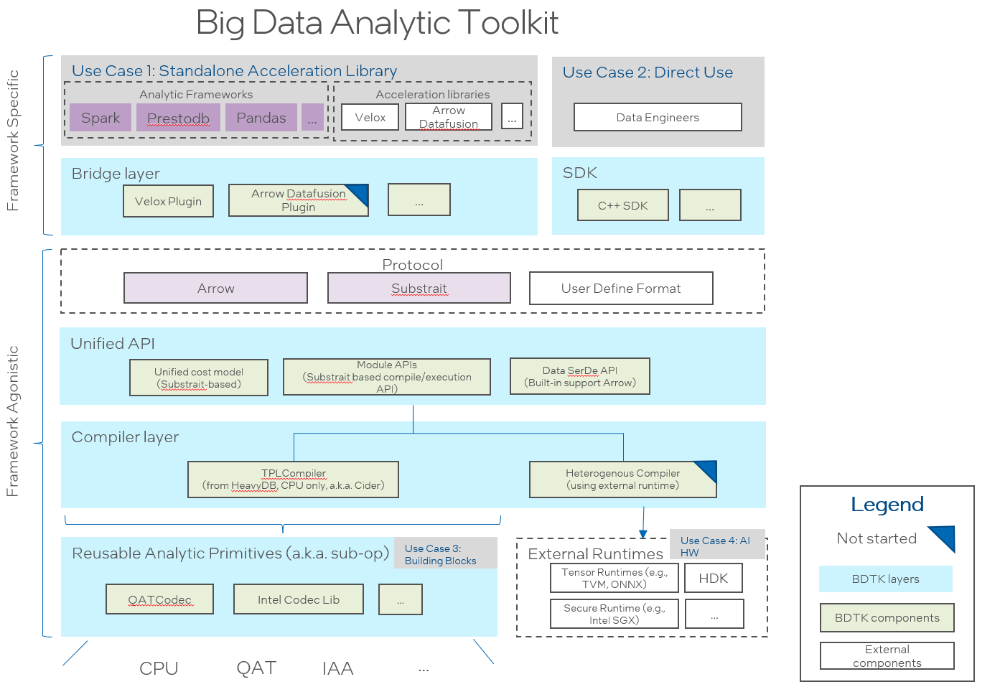

BDTK in 10 minutes¶
Introduction¶
Big Data Analytic Toolkit is a set of acceleration libraries aimed to optimize big data analytic frameworks.
By using this library, frontend SQL engines like Prestodb/Spark query performance will be significant improved.
The following diagram shows the design architecture.
Major components of the project include:
a modularized and general-purposed Just-In-Time (JIT) compiler for data analytic query engine. It employs Substrait as a protocol allowing to support multiple front-end engines. Currently it provides a LLVM based implementation based on HeavyDB ).
a Velox-plugin is a bridge to enable Big Data Analytic Toolkit onto Velox. It introduces hybrid execution mode for both compilation and vectorization (existed in Velox). It works as a plugin to Velox seamlessly without changing Velox code.
Intel Codec Library for BigData provides compression and decompression library for Apache Hadoop/Spark to make use of the acceleration hardware for compression/decompression.
APIs¶
The following table shows the query parameters for this service.
| Attribute | Description | Required |
|---|---|---|
| CiderRuntimeModule | The runtime module of Cider | Yes |